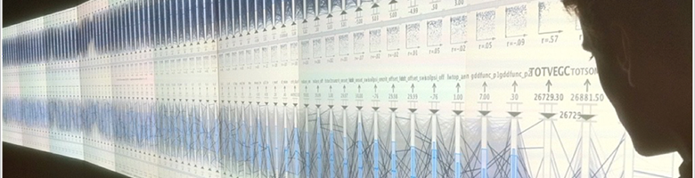

Computers & Graphics, 2017



Large Scale Visualization
Data Wrangler
Model-Driven Text Visualization
imMens: Visual Querying of Big Data
Lyra: A Visualization Design Environment
Predictive Translation Memory
Color Naming Models
recent publications(View All Papers)